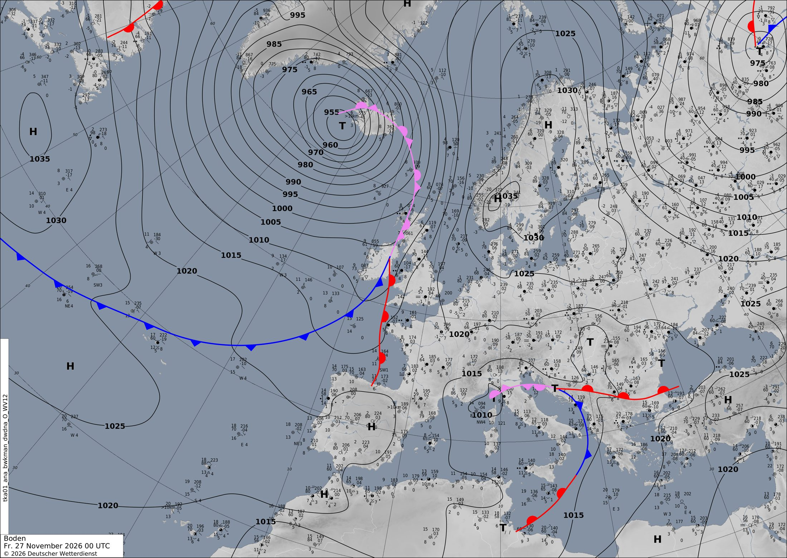

Un frente atlántico se frena sobre Francia y el anticiclón vuelve el lunes
Una borrasca muy profunda junto a Islandia manda su frente hacia el oeste de Europa, pero un anticiclón potente en el este lo frena. Mientras, el Mediterráneo oriental se lleva las tormentas.
Europa y el Atlántico
Hoy, viernes 27, el protagonista está al suroeste de Islandia: una borrasca de unos 950 hPa, muy profunda, con las isobaras muy apretadas a su alrededor. Encima tiene una bolsa de aire muy frío en altura (493 dam en el mapa de 500 hPa), así que es una borrasca madura y casi quieta.
De ella cuelga un largo sistema de frentes. En la carta del DWD se ve un frente ocluido (en rosa) que rodea Islandia y baja hasta las islas británicas. Allí se parte en dos: un frente cálido (rojo) que baja frente a Bretaña y Galicia, y un frente frío (azul) que se curva hacia el oeste por el Atlántico. En el satélite es la gran banda blanca en forma de coma. Detrás quedan unas nubes en panal: aire frío que pasa sobre un mar más templado. Mira aquí.
La corriente en chorro sopla con fuerza al este de Terranova (hasta 304 km/h mañana) y fabrica nuevas borrascas. Mañana, sábado, aparece una de unos 994 hPa al oeste de Irlanda, y el domingo varias de unos 970 hPa entre Islandia y el mar de Irminger.
El freno está en el este. El anticiclón de Escandinavia (1037 hPa hoy) se refuerza y se desplaza a Bielorrusia, donde llega a 1045 hPa el domingo. Hace de muro: los frentes atlánticos no pueden avanzar hacia el este y se quedan alargados sobre Francia y el golfo de Vizcaya durante el fin de semana.
En el Mediterráneo pasa otra cosa. Una vaguada que hoy está sobre Baleares se estira hacia el sur. Mañana deja una bolsa de aire frío en altura al sur de Túnez, casi una DANA. Con el mar aún templado hay mucha energía para tormentas: el CAPE pasa de 3000 J/kg cerca de Libia. Fíjate en el mapa de altura y el CAPE. Las lluvias fuertes se van a Grecia: hasta 60 mm en 12 h mañana y hasta 101 mm al sur de Grecia en la noche del domingo al lunes.
Para el lunes 30 el modelo muestra un anticiclón de 1033 hPa sobre el macizo Central y otro al este de Azores. Las borrascas se retiran al norte. A 72 horas el detalle puede cambiar, pero la tendencia a la estabilidad es clara.
En península ibérica y Baleares
Hoy la Península empezó la madrugada bajo un pequeño anticiclón centrado en Castilla y León (1022 hPa). Con cielo despejado y poco viento, el suelo pierde calor deprisa. Por eso a medianoche el termómetro marcaba hasta −10,6 °C en el punto más frío, seguramente en zonas altas del interior. En los valles pueden formarse inversiones térmicas y algo de niebla.
El frente atlántico del que hablamos en Europa llega por el noroeste. Entre las 00 y las 12 UTC de hoy deja hasta 14,3 mm en 12 horas. Como el frente se frena, la lluvia se repite: hasta 13,1 mm el sábado por la mañana y hasta 14,4 mm el domingo por la mañana. Son lluvias moderadas, sobre todo en Galicia y la cornisa cantábrica. En el resto, poca cosa. Mira aquí la banda de lluvia el sábado.
En Baleares, la vaguada en altura dejaba hoy de madrugada algo de inestabilidad: el CAPE llegaba a 504 J/kg y algún chubasco era posible. La vaguada se marcha al sur durante el día y la energía baja enseguida.
El viento sopló hoy con rachas de hasta 55 km/h en las zonas más expuestas. Afloja hasta unos 24 km/h el domingo y vuelve a unos 41 km/h el lunes.
Con aire algo más templado a 1500 m (de media 7,5 °C el sábado a mediodía), a mediodía se llega a unos 19 °C en las zonas más cálidas del sur y del Mediterráneo. La presión sube hasta 1033 hPa el lunes. Vuelve la calma, y con ella las noches frías del interior.
En Francia
Francia está justo en la frontera. Por el oeste llega el frente atlántico; por el este manda el aire frío. Hoy, a unos 1500 m, la temperatura va de −10 °C a +7 °C según la zona. El frío lo deja una bolsa de aire frío en altura sobre Alemania. La diferencia es enorme: es el «choque» de masas de aire que alimenta el frente.
Por eso el oeste se moja y el este no. Hoy caen hasta 12,4 mm en 12 horas por Bretaña y la fachada atlántica. El sábado entre las 00 y las 12 UTC llegan hasta 15,3 mm, y el domingo otros 12–13 mm por la mañana. El frente apenas avanza porque el anticiclón del este no le deja paso. Mira cómo se queda alargado sobre el país. En los Alpes, la noche del viernes al sábado puede bajar hasta −19,3 °C en las cumbres.
El viento llega a unos 50 km/h en las costas y en los pasillos de viento, sobre todo el sábado. El lunes el anticiclón se coloca sobre el macizo Central con 1033 hPa. Fíjate en el viento casi en calma. Eso significa noches frías y posibles nieblas en los valles.
París y alrededores. Hoy, viernes, de −2 a 2 °C a medianoche y unos 3 °C a mediodía. Está seco (0,1 mm como mucho) y apenas hay viento (menos de 10 km/h). El sábado, entre −2 y 1 °C a medianoche y unos 4 °C a mediodía. Sigue seco hasta la tarde, con alguna gota por la noche (0,7 mm) y viento flojo de hasta 13 km/h. El domingo es el día más húmedo: hasta 4,6 mm entre las 00 y las 12 UTC, con 1–4 °C a medianoche y 7–10 °C a mediodía. El lunes de madrugada la presión sube a 1031 hPa, a medianoche hay de 1 a 4 °C, ya no llueve y el viento queda en unos 10 km/h.
Lección del día: Frentes: frío, cálido y ocluido
Hoy vamos a seguir un frente de verdad, desde el dibujo del meteorólogo hasta el modelo.
- Abre la carta del DWD y busca la T al suroeste de Islandia. De ella sale una línea rosa con semicírculos y triángulos: es un frente ocluido, donde el frente frío ya ha alcanzado al cálido.
- Síguela hacia el sur. Junto a Irlanda se separa en una línea roja con semicírculos (frente cálido) y otra azul con triángulos (frente frío). Los símbolos apuntan hacia donde avanza el frente.
- Ahora compara con el satélite: la banda blanca de nubes altas coincide con esas líneas. La lluvia nace allí porque el aire cálido se ve obligado a subir.
- Pasa al modelo de mañana. Mira aquí: la banda azul de lluvia está justo donde cambia el color de la temperatura a 850 hPa. Ese cambio brusco de temperatura es el frente.
- Avanza a +48 h y comprueba que la banda apenas se ha movido hacia el este: el anticiclón la frena.
Ponte a prueba
3 preguntas sobre el tiempo de hoy. Puedes mirar el mapa antes de contestar.
¿Por qué el frente atlántico se queda casi parado sobre Francia el fin de semana?
El anticiclón pasa de Escandinavia a Bielorrusia y llega a 1045 hPa: hace de muro y los frentes no pueden seguir hacia el este. Mira aquí.
En la carta del DWD, ¿qué tipo de frente es la línea rosa que rodea la borrasca de Islandia?
El rosa, con semicírculos y triángulos alternados, es un frente ocluido: el frente frío ha alcanzado al cálido cerca del centro de la borrasca. En el satélite es la cabeza de la «coma» nubosa. Mira aquí.
¿Qué tiempo cabe esperar en el centro de Francia el lunes 30 de madrugada?
El modelo pone un anticiclón de 1033 hPa sobre el macizo Central: aire que baja, isobaras separadas y poco viento. Mira aquí.
La carta oficial
Análisis de superficie del servicio meteorológico alemán (DWD) válido el 27/11/2026 a las 00 UTC, dibujado por meteorólogos a partir de observaciones. Aquí sí hay frentes: azul con triángulos, frío; rojo con semicírculos, cálido; morado, ocluido. Las borrascas son T y los anticiclones H. Cómo leer esta carta.
